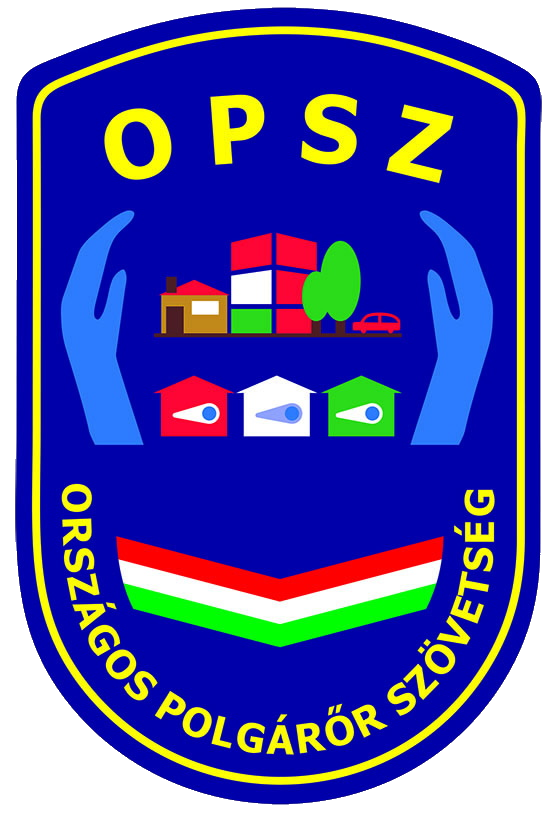

ORSZÁGOS POLGÁRŐR SZÖVETSÉG
A polgárőrségi pályafutásom 2018 Szeptemberében kezdődött, Jász-Nagykun-Szolnok megyébe, Jászárokszálláson. Akkor még (mivel nem töltöttem be a 16. életévemet) nem végezhettem biztosítási feladatokat, maximum adminisztrációsakat láthattam el. Ennek oka az volt, hogy az "Ifjú Polgárőrség" állományba csak 16 évesen lehetett bekerülni, viszont mivel már közelítettem hozzá és az 50 órás kötelező "közösségi munkához" kellettek az óraszámok, így a visszamaradt fél évtől eltekintettek. Mihelyt betöltöttem a minimum korhatárt, már "mehettem" utcára is. Rengeteg sportrendezvényen (football meccs), városnapokon, városi rendezvényeken stb. biztosítottam. Ennek a hivatásnak űzésével sok jó embert ismerhettem meg, akikkel a mai napig tartom a kapcsolatot. Gimnázium utolsó évében döntöttem úgy (érettségi előtt fél évvel), hogy inkább átjövök a saját településemre, mivel édesapám is itt végzi az önkéntes hivatást és nekem se jelent terhet az odautazás. Próbáltam a lehető legjobb munkát végezni, mindig a maximumot kihozni mindenből, így először nem nagyon akartak elengedni. 2021 Januárjában átkerültem a Vámosgyörki Polgárőr Egyesületbe, ahol a mai napig aktív önkéntes polgárőrként (mostmár rendes/felnőtt polgárőrként) végzem feladatomat. A helyi egyesületnek köszönhetően, egy országos rendezvényen is részt vehettem, ahol az Országos Rendőrség Gyöngyösi Kapitánysága, a gyöngyösi járás (Heves Megye) összes polgárőregyesület segítségét kérte. Ez a globális rendezvény a "Tour De Hongrie 2021" bicikliverseny volt, amire még a mai napig is egy nagyon jó emlékként tör fel bennem.
GAMING
Kiskorom óta nagyon szeretem a számítógépeket és ebbe beletartoznak a videójátékok is. 6 éves koromban ismerkedtem meg a számítógéppel, azóta minden nap legalább 2 órát töltök játékszoftverekkel. Számomra a "gaming" megnyugvásra, a problémák ideiglenes elfelejtésére ad megoldást. Legelső játékszoftver, amivel játszottam, az Age Of Empire sorozat 2. része volt. Akkor még nagyszülők / szülők eszközeit használtam játékra és böngészésre is. Általános iskolai tanulmányaim befejeztével megvettem életem első számítógépét, amit még a mai napig, rendszeresen (minden fejlesztés nélkül) használok. Leginkább "render" és képszerkesztési folyamatokat lát el. Azon kívül a tanulmányaim fedezésére és játékra egy TUF Gaming laptopot használok. Általában belső nézetű lövöldözős (FPS) játékokkal játszom, de kedvenceim közé sorolhatom a stratégiai (strategy), a verseny (racing) és a Szimulator (simulator) játékokat is.
KEDVENC VIDEÓJÁTÉKOK
A kedvenc videójátékaimról találsz itt némi ízelítő videót, mégis hogyan kell őket elképzelni. !A videók felhasználása engedélyköteles! - Engedéllyel NEM rendelkezem.